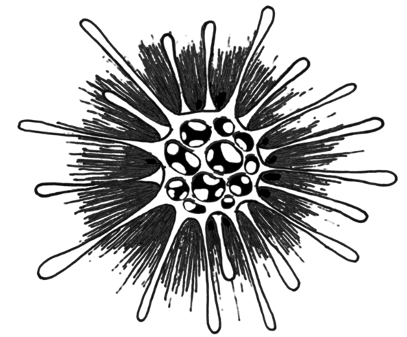
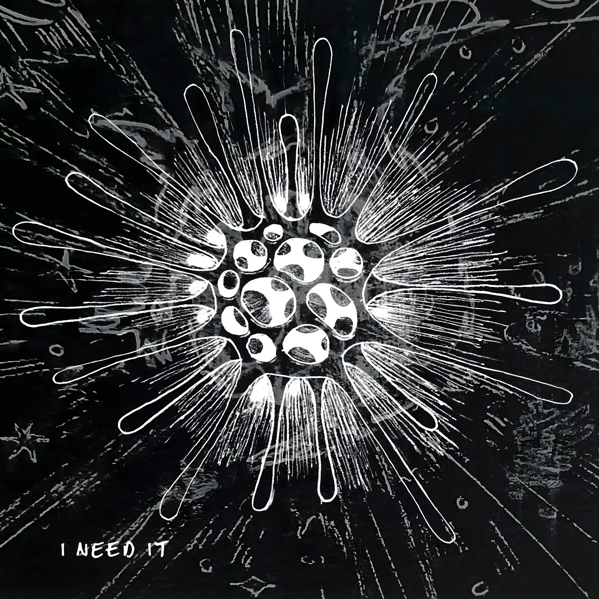
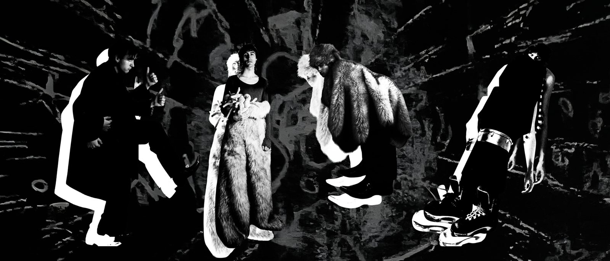

debut single, 2024

mixed by matt lomas, mastered at metropolis studios
about
mishko is the solo project of a london-based producer, multi-instrumentalist, and performing artist. classically trained on piano, self-taught on guitar, bass, drums, saxophone, and trumpet — the work sits between song and studio process, using distortion and granulation as compositional tools rather than effects.
debut album out 2027, built around combining organic instrumentation with abstract electronic sound design. studio and stage experience spans the roundhouse, ten87, bankstock, and tileyard, supported by arts council england (dycp) funding.
music
demos
early sketches and works in progress — unmixed, unmastered.
live
a transportable rig combining hardware sequencing, sampling, and a modular signal path — built to travel light by train while keeping the same tools used in the studio available on stage. developed with support from an nlpg grant.
press
photos for press and promotional use.

02atwo frames filled — add more photos to fill the rest
contact